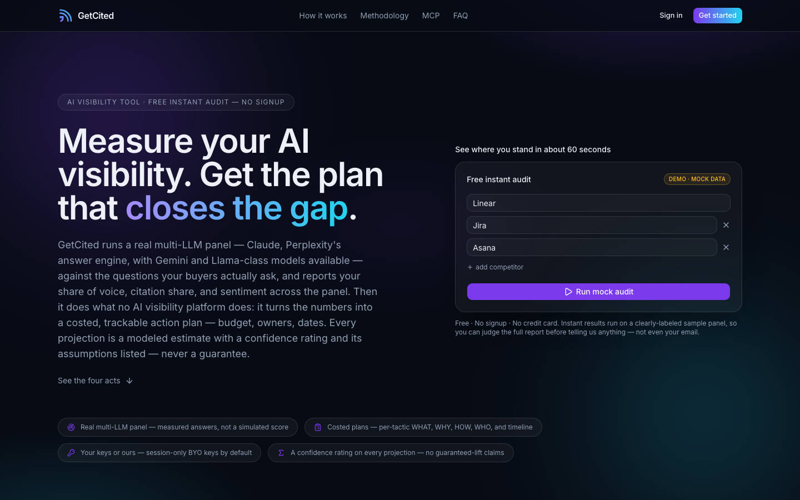
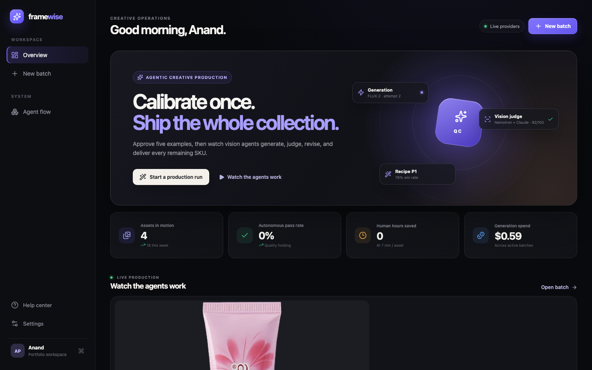
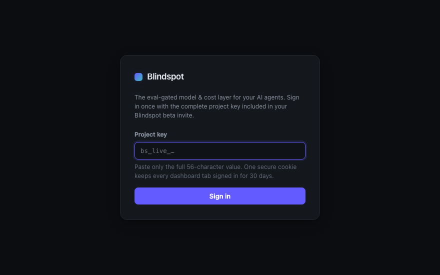
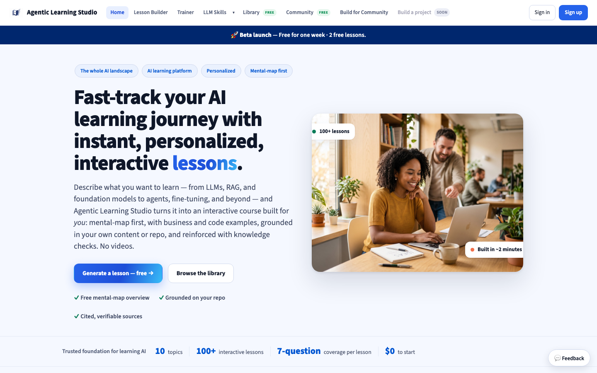
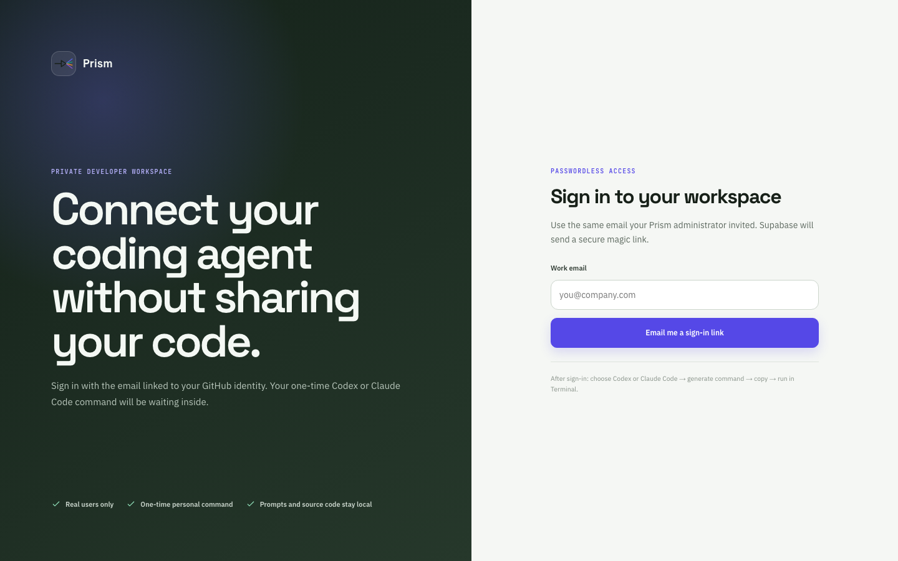
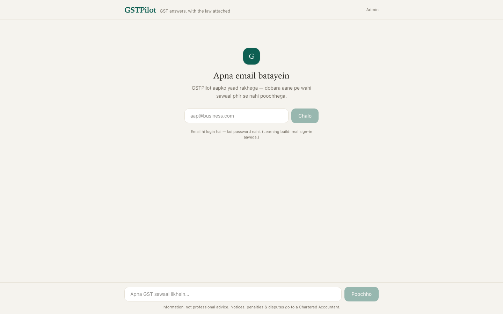
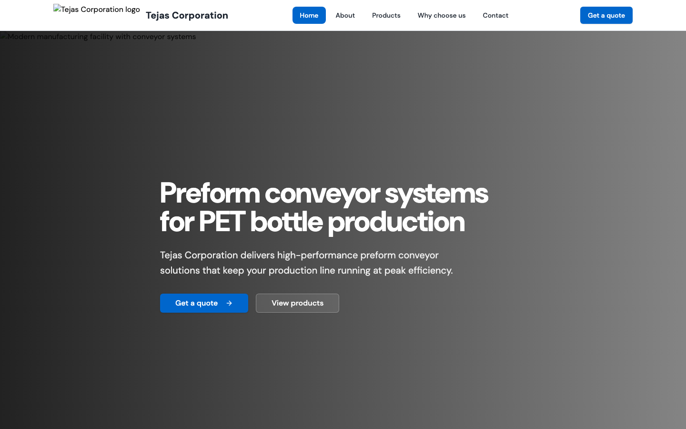

Profile
6 years in AI & analytics products — today running Fynd's AI media-generation suite (PixelBin) hands-on across strategy, solutioning, architecture and growth; earlier taking an enterprise analytics product 0→1 at Deloitte with GTM across India, Germany & Japan.
Agentic pipelines, RAG, evals, MCP and multi-model workflows — built daily, in production, on GCP. Not slideware: working products with users, revenue and reliability targets.
14 years in consulting — strategy planning, CX strategy, business-performance improvement and AI solution design across Automotive, Industrial Products, Chemical, Pharma and FMCG; 10+ years leading teams and senior-leadership conversations.
Core Competencies
AI Engineering
- AI & LLM applications — RAG, evals, agentic workflows, MCP
- LangChain, LangGraph, prompt engineering & tool calling
- Python, JavaScript, SQL, pandas
- Claude, Codex, custom Claude skills, Vercel dashboards
- Cloud: GCP (production AI architecture); AWS Bedrock (cert. Aug 2026)
Product Leadership
- Product strategy, roadmap planning & P&L ownership
- PRDs & specs, solution architecture
- Pricing & monetization
- PLG, SEO / GEO, conversion optimization & product GTM
Growth & Analytics
- A/B testing, funnel & cohort analysis
- PostHog, GA4, Paddle, Sentry
- Google Search Console, Ahrefs, Neo4j
Experience
Product & Growth Director
Fynd — PixelBin October 2025 — PresentReport directly to the Founder; own the P&L, leadership reporting and product roadmap for Fynd's AI media-generation suite — 15+ tools (PixelBin, WatermarkRemover.io, Upscale.media, EraseBG).
Product Strategy & Ownership
- Repositioned point tools (watermark removal, upscaling) into a full AI media-generation platform for non-designers and beginner creators; opened MCP as a new distribution surface.
- Reset product strategy, ICP and roadmap against team capacity — 10+ releases in 3 months vs 2–3 the prior year; drove highest-ever revenue for 3 consecutive months.
- Own growth end-to-end — SEO technical & content (150+ tool pages/blogs), pricing, power-user conversion, offers and a B2B sales motion; aligned engineering, ML, growth and SEO KPIs to per-tool revenue goals.
- Mined user signals — prompt types, user profiles, model/feature usage — to prioritize features that lift conversion.
Product, Solutioning & Architecture
- Designed the end-to-end pipeline and agentic flow for a Creative Agent; led solutioning for a Marketing Studio that produces agency-grade creative end-to-end.
- Lead product design and solutioning for image & video generation across models (nanoBanana, Kling, PixVerse, Seedance) — model selection, generation workflows, I/O parameters, UX and pricing.
- Work in-depth on solution architecture with engineering on GCP — shipped working apps (UGC Ad Studio, Batch Editor); scope scalable solutions, negotiate build timelines, root-cause failures pre-release.
Apps, AI Tooling & Reliability
- Built SEO apps, growth dashboards (GA4 + PostHog + Sentry + Paddle), engineer-facing solutioning apps, a Chrome extension, and a product-design app that lets non-designers produce UI/UX faster.
- Authored 20+ custom Claude skills with deploy-ready outputs; published a public Claude skill accepted into the community "awesome Claude skills" repository by the maintainer.
- Drive scale and reliability — error dashboards, Sentry monitoring, release governance and automated tests; moved Batch Editor processing client-side → server-side; 0 customer complaints on main generation tools.
Product Lead — AI & Analytics Products
Deloitte India (within Strategy & Operations tenure) 2020 — March 2025No-Code Analytics Product (0→1)
- Designed a no-code analytics product with a built-in RCA engine for network-performance improvement — owned UI/UX, data model, KPIs and RCA rules; business users self-serve data, custom charts and reports.
- Took the product 0→1 — deployed with a leading auto player inside a network-profitability program.
- Led GTM end-to-end — OEM & dealer-group outreach and Deloitte-network selling in Germany & Japan; owned demos, client-management pitches, proposals and commercials.
AI & GenAI Solutions — Auto OEMs
- Led AI & GenAI strategy and solution design for a leading commercial-vehicle OEM to maximize vehicle uptime — stakeholder needs, capability assessment, cross-industry benchmarking.
- Defined outcomes, user requirements, business impact, analytical approach and UX with data-science, data-engineering and app-dev teams.
- Specified I/O parameters, workflows and solution architecture — data sources, integrations, storage & processing — on Google Cloud.
- Business & functional lead for a multi-year global AI CoE for a large Auto OEM; designed a techno-functional 'Customer Digital Twin' using ML & GenAI.
Strategy & Operations — Director
Deloitte India & PwC March 2017 — March 2025- Led Last-Mile Mobility strategy, strategic planning and large-scale Customer Experience Transformation for leading Indian OEMs — customer/channel research, innovation frameworks and future journeys; led retail-excellence and CX programs across multiple automotive players.
- Led a large CX transformation for a leading two-wheeler player — customer research, moments of truth, global benchmarking & SME interviews, and future-state journey design enabled through technology.
- Led multiple engagements to drive EBITDA improvement across automotive dealerships — funnel diagnostics, implementation and change management.
- Led strategic planning for a large auto-component manufacturer; designed and deployed retail-excellence and CX-enhancement programs across multiple automotive players.
- Led business development and client negotiations end-to-end; co-built an Innovation-Council-funded Sales, Marketing & Profitability analytics tool — now a top firm asset; led eminence via articles, interviews and industry events.
Strategy & Operations — Senior Consultant
KPMG India April 2014 — February 2017- Led 4–5 consultants on dealer profitability diagnostics across 40 dealers (200–300 bps improvement potential); deployed a CX & dealer-incentive program for a German automaker; ran manpower cost optimization (~15% reduction) for a large steel manufacturer.
Strategy & Operations — Consultant
PwC India February 2013 — March 2014- Led capacity/throughput enhancement, TPM and PMO projects across Pharma and Paper industries.
Education, Certifications & Awards
Education & Certifications
- B.Tech, Aerospace Engineering — IIT Bombay (2007–2011, CGPA 7/10). Conceptualized & executed Techfest, Asia's largest intercollege science & technology festival — team of 22, budget INR 10M, footfall 75,000; collaborated with AIT Thailand for the International Robotics Challenge.
- Certifications: IBM Data Science; Stanford Online — Machine Learning.
- Scheduled Aug 2026: Claude Certified Architect (CCA-F); AWS Solutions Architect — Associate.
Awards
- Deloitte: highest firm award 'President's Bonus' (twice) and 'Dot of Fame' (three times); nominated for an accelerated growth program incl. a strategic-thinking course with Tuck Business School.
- 'Above and Beyond' (KPMG & PwC) and 'Super Team' (KPMG) awards for excellence in project execution.
Prefer the one-pager? The full CV — every engagement, award and certification — in the original PDF format.
Download CV (PDF) ↓Products I've Built
Designed, architected, built and deployed end-to-end — solo, with AI-first tooling. Every one of these is a real, running product on Render: agentic backends, eval loops, MCP servers, RAG pipelines and the growth instrumentation around them.

LIVEGetCited
Measures a brand's visibility across AI answer engines — a real multi-LLM panel (Claude, Perplexity, Gemini/Llama-class) reports share of voice, citation share and sentiment against the questions buyers actually ask. Then turns the numbers into a costed, trackable action plan with confidence-rated projections. Ships its own MCP server so agents can query it directly.

LIVEFramewise
"Calibrate once, ship the whole collection." Approve five example creatives, then vision agents generate, judge, revise and deliver every remaining SKU — a generation model paired with an LLM-as-judge QC loop (vision scoring per attempt), backed by a background worker for batch runs. Tracks autonomous pass rate, human hours saved and generation spend per batch.

LIVEBlindspot
A gateway + dashboard that sits between your AI agents and model providers: routes calls, gates model choices behind evals, and gives teams a single view of quality and spend. Two services in production — an API gateway and an ops dashboard with project-key auth.

LIVEAgentic Learning Studio
Turns any topic into a self-contained interactive lesson — a side-by-side builder where you refine the overview while agents generate mental maps, worked explanations and knowledge checks. Grew out of my public Claude skill of the same name; now a hosted product in beta.

LIVEPrism
Lets teams connect coding agents (Claude Code, Codex) to a shared workspace without sharing source code — one-time personal commands, passwordless magic-link auth, prompts and source stay local. Built for the reality that agent adoption stalls on trust, not capability.

LIVEGSTPilot
A Hinglish-first GST question-answering assistant for small businesses — every answer cites the underlying provision, and the product is explicit about where an assistant should stop and a Chartered Accountant should start. Email-only login, memory of past questions.
Jhalak
Gives a small business a complete online presence in one pass — website, product catalogue and AI-generated promo reels — built on media-generation APIs. First cut shipped and deployed on Render; currently offline pending an API-token refresh.

LIVETejas Corporation
A production website for a PET preform conveyor-systems manufacturer — positioning, copy, design and deployment handled end-to-end. Proof that the same AI-first build pipeline works for real small-business clients, not just software products.
Open Source
agentic-learning-skill ★ 4
Turn any topic into a self-contained interactive HTML lesson, or a brief into an installable Agent Skill — runs on your own Claude, no server. Accepted into the community "awesome Claude skills" repository by the maintainer.
View on GitHubpower-coding ★ 5
A mindful-coding OS for any LLM coding agent (Claude Code, Codex, Gemini CLI) — session handoffs, eval loops, vibe-debugging diagrams, FMEA failure scans and a pre-commit secret gate. Plain markdown, no daemons.
View on GitHubAt PixelBin (Fynd)
Products and internal tooling designed and shipped with engineering, ML and growth teams — for a suite serving millions of visits across PixelBin, WatermarkRemover.io, Upscale.media and EraseBG.
Running an AI media-generation suite, hands-on
P&L owner and product lead across 15+ tools — these are the flagship builds from the last three quarters.